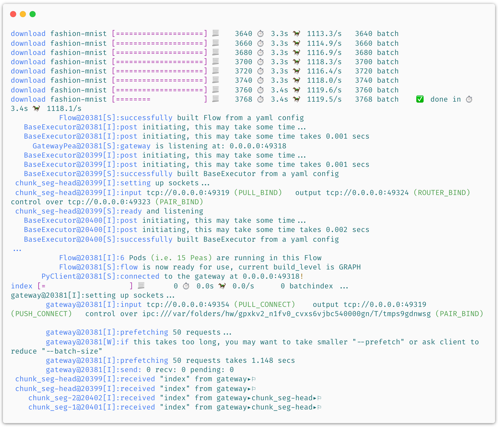
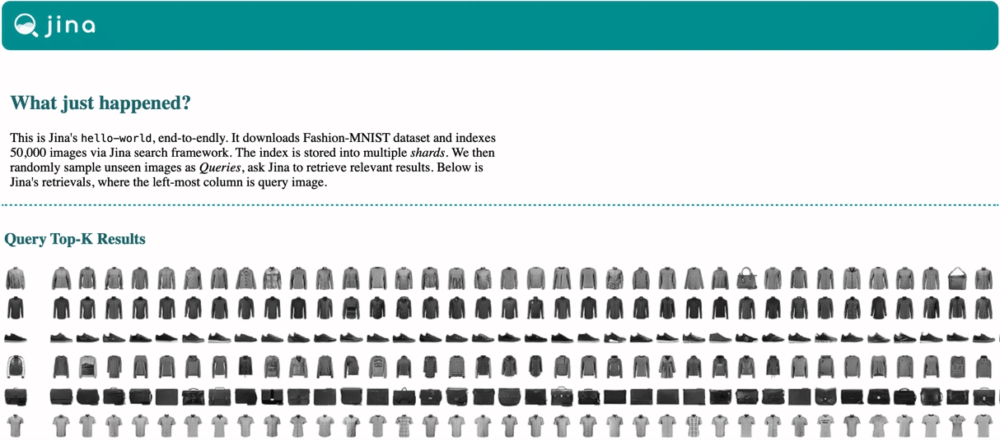

fionn_test
As a starter, we invite you to try Jina’s “Hello, World” - a simple demo of image neural search for Fashion-MNIST. No extra dependencies needed, simply run:
jina hello-world
Or even easier for Docker users, no install required, simply for MacOS:
docker run -v "$(pwd)/j:/j" jinaai/jina hello-world --workdir /j && open j/hello-world.html
On Linux:
docker run -v "$(pwd)/j:/j" jinaai/jina hello-world --workdir /j && xdg-open j/hello-world.html

This downloads the Fashion-MNIST training and test data and tells Jina to index 60,000 images from the training set. Then, it randomly samples images from the test set as queries, and asks Jina to retrieve relevant results. After about 1 minute, it opens a web page and show results like this:

And the implementation behind it? It’s simple:
All the big words you can name: computer vision, neural IR, microservice, message queue, elastic, replicas, and shards all happened in just one minute!
pip install "jina[sse]" jina hello-world --logserver
Or if you use Docker:
docker run -p 5000:5000 -v "$(pwd)/j:/j" jinaai/jina hello-world --workdir /j --logserver && open j/hello-world.html # replace "open" with "xdg-open" on Linux
Intrigued? Play with different options via:
jina hello-world --help